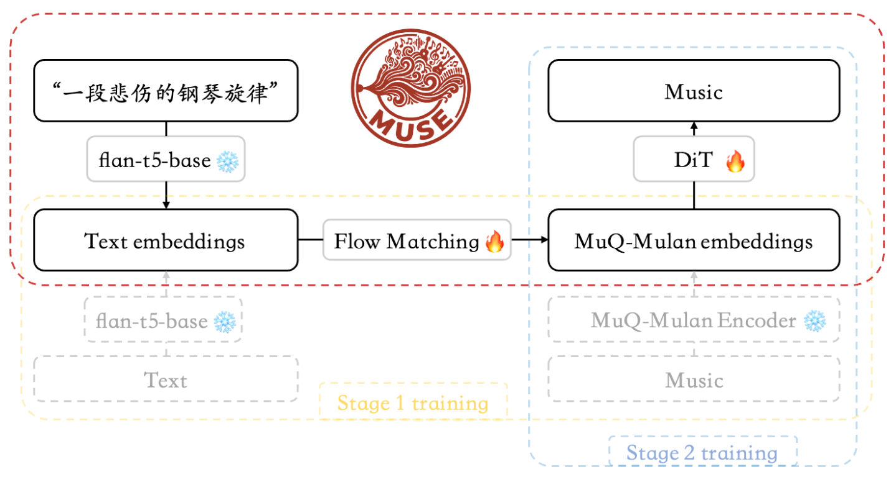

01
Background & Motivation
The One-to-Many Problem
🎵 "A sad piano melody" → Infinite valid interpretations exist
❌ Regression: \( Y = f(X) \)
- Predicts E[Y|X] (mean)
- Blurry, mode-averaged output
- Cannot capture multimodality
✓ Generative: \( p(Y|X) \)
- Models full conditional distribution
- Sample diverse, high-fidelity outputs
- Preserves creative ambiguity
Parallel Computing Challenges
- Memory-heavy: 1B+ param models require multi-GPU training
- Compute-bound: 100-step ODE sampling dominates inference
- I/O bottleneck: Audio data (44.1kHz stereo) is bandwidth-intensive
Research Goal: End-to-end parallelization of a two-stage text-to-music pipeline
with quantified scaling limits and reproducible benchmarks.
02
Two-Stage Architecture

Stage 1: Semantic
Text2MuQFlow
271M params | 16 layers × 1024 hidden
- Cross-attention Flow Matching
- Output: 512-dim MuQ-MuLan embedding
- 50-step ODE (dopri5 solver)
- CFG scale: 3.0
Stage 2: Acoustic
StableAudioMuQ
1.05B params | 24-layer DiT
- Diffusion Transformer + CFG (2× forward)
- 100-step ODE sampling
- Oobleck VAE decoder
- Output: 44.1kHz stereo, 47s
Training Data
| MusicBench | 52K text-audio pairs |
| Music4All | 109K tracks with metadata |
| Preprocessing | Cached MuQ embeddings → decouple I/O |
Design Principle: Decouple stages for independent parallelization—Stage 1
benefits from batching; Stage 2 is memory-bound.
03
Distributed Training
Data Parallel Strategy
| Framework | PyTorch DDP (DistributedDataParallel) |
| Launch | torchrun --nproc_per_node=4 |
| Sampler | DistributedSampler with epoch-aware shuffling |
| Sync | AllReduce gradients + barrier for checkpoints |
Memory & Throughput Optimizations
Mixed Precision (bf16)
Gradient Accumulation
Gradient Clipping
Cached Embeddings
- bf16 AMP: ~50% memory reduction, faster matmuls on Ampere
- Grad Accum: Effective batch = local_bs × n_gpus × accum_steps
- Embedding Cache: Precompute MuQ → eliminate encoder cost
Training Summary
| Stage | GPUs | Wall Time | GPU-hrs | Best Loss |
|---|---|---|---|---|
| Stage 1 | 2×A800 | ~8.2h | ~16 | 0.0569 |
| Stage 2 | 4×A800 | ~32h | ~128 | 1.078 |

04
Batch Inference Acceleration
Throughput Comparison
Stage 1
15×
@ BS=16
271M model under-utilizes GPU
Stage 2
~1.5×
@ BS=16
1.05B already saturates GPU
Memory Behavior Analysis
| Stage 1 | Memory constant (~4.5GB) — model-dominated |
| Stage 2 | Memory scales linearly (18→36GB) — activations-dominated |
Implementation Details
- Batched seeds:
Text2MuQFlow.generate(x0=[N, 512])for reproducibility - CUDA sync: Warmup +
torch.cuda.synchronize()for accurate timing - Peak memory:
torch.cuda.max_memory_allocated()
💡 When Does Batching Help?
| Model Size | Benefit | Reason |
|---|---|---|
| < 500M | ✓ 5-30× | GPU under-utilized |
| 500M-1B | ⚠️ 2-5× | Partial saturation |
| > 1B | △ ~1× | Already saturated |
05
Performance Results
Stage 1: Text → MuQ-MuLan (271M)
| Batch Size | Time/Sample | Throughput | Speedup | GPU Mem |
|---|---|---|---|---|
| 1 | 1667 ms | 0.60/s | 1.0× | 4.58 GB |
| 4 | 442 ms | 2.26/s | 3.8× | 4.58 GB |
| 8 | 239 ms | 4.18/s | 7.0× | 4.58 GB |
| 16 | 111 ms | 9.0/s | 15× | 4.58 GB |
| 32 | ~50 ms | ~18/s | ~33× | 4.58 GB |
Stage 2: MuQ → Audio (1.05B)
| Batch Size | Time/Sample | Speedup | GPU Mem |
|---|---|---|---|
| 1 | 9.94 s | 1.0× | 18.75 GB |
| 4 | 7.19 s | 1.4× | 22.22 GB |
| 16 | 6.67 s | 1.5× | 36.09 GB |
Scaling Efficiency
42%
End-to-End Time Reduction
185s → 108s
For 16 samples
<1e-7
Max Output Diff (Reproducible)
06
Real-World Impact
Why Batch Inference Matters
🎵 One prompt → Multiple diverse samples → Pick the best
Batch inference makes creative exploration practical: generate 16 variations in 108s instead of 185s, enabling rapid artist iteration.
MUSE: Full-Stack Application
| 🎹 Studio | Text-to-music generation with batch sampling |
| 🔬 Lab | Latent space exploration & interpolation |
| 📚 Library | Audio management, tagging & playback |

MUSE Lab: Diverse samples visualized in MuQ-MuLan latent space
Technology Stack
Gradio
PyTorch
torchaudio
Plotly
UMAP
Interactive web interface with real-time visualization, drag-drop audio, and reproducible seed control.